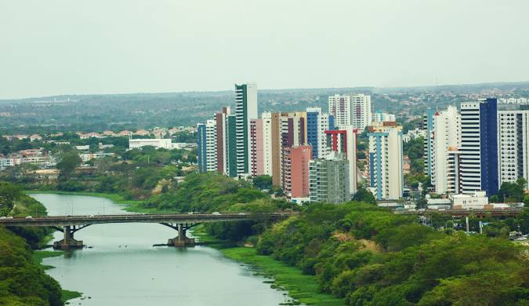

O Piauí, localizado no nordeste do Brasil, é um estado de grande diversidade natural e cultural. Sua capital, Teresina, é uma cidade conhecida pelo calor humano de seu povo e pelo clima quente, mas também por suas áreas verdes e pela culinária típica, com pratos como a carne de sol e a galinha à cabidela. O estado é rico em belezas naturais, como o Parque Nacional de Jericoacoara, que encanta com suas dunas e lagoas, e o Delta do Parnaíba, um dos maiores deltas em mar aberto do mundo. A economia do Piauí é baseada na agricultura, especialmente o cultivo de arroz, soja e milho. O Piauí é um estado acolhedor, com paisagens únicas e uma cultura marcada por tradições e festas populares.
 Voltar